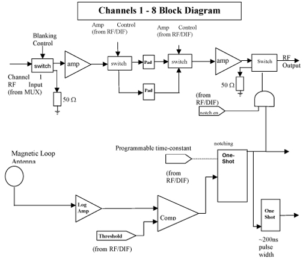

Proprietary to General Electric Company
Direction 5440000, Rev# 5
Signa HDxt Service Methods
Module Version 1.0, Version Date 4/25/07
Proprietary to General Electric Company |
UTNS stands for “Universal Transient Noise Suppression”. In EXCITE II systems, the UTNS 3 is the replacement for what was previously used to block white pixels: the TNF, or “Transient Noise Filter”. This document explains some theory as to how the UTNS 3 works as well as some of the major differences between the TNF and the UNTS 3.
The Universal Transient Noise Suppressor (UTNS) is a detection circuit designed to detect “spike noise” before it enters the Receiver. The UTNS is located in the Remote RF (RRF) chassis with inputs coming from the MUX board and outputs going to the Receiver board. The control of the UTNS is accomplished from the Remote RF – Digital Interface (RF-DIF) board.
The “spike noise” generated during MRI scans can result in “white pixel” artifacts in the image and potential damage to hardware in the system. Therefore, an effective means to detect and remove these spikes as they enter the Receiver should both improve image quality and also provide further protection of over-voltage conditions to components in the signal path.
The UTNS 3 receives 8 channels of RF signals at its input. The signal first passes through the blanking switch. This switch on each channel is shunted to a 50-Ohm load whenever the Receiver is commanded to a “blanking” condition. Each channel is then passed through a µ-wave amplifier, one of two possible attenuators and a second µ-wave amplifier. The two possible gain paths, due to different value attenuators, are coordinated with the attenuation control of the Receiver board. This “distributed gain” approach of splitting the channel gain across both the Receiver and UTNS was implemented because the UTNS 3 provides a much “quieter” environment than the Receiver, in terms of noise from clocks and other sources on the board. The signal is then passed through a notching switch before leaving the UTNS on its way to the Receiver.
The UTNS 3 has a dedicated detection path. This signal path originates in the magnet room from a magnetic loop antenna attached to the rear pedestal. A 50-Ohm cable then carries the output of the magnetic loop to the UTNS detection port. The detection path uses a logarithmic amplifier for broadband detection of spike events picked up by the magnetic loop antenna in the scan room. This detection method allows the design to be a “universal TNS” in that it could be used over the entire operating frequency range of 8 – 128 MHz, which includes the MR signals for 0.2 T to 3.0 T systems. This is possible because the design does not allow the spike to be shaped by the path of the receive signal, which is frequency dependent.
The output of the logarithmic amplifier is then conditioned and sent through a comparator, where the magnitude of any spike is compared to a certain detection threshold level that is programmable via the RF-DIF. If the spike’s magnitude exceeds this threshold, a one-shot device is triggered. The output of the one-shot is then sent to the RF-DIF signaling that a spike event had occurred. If “notching” is enabled for any one of eight channels on the UTNS, then the output of the one-shot is also used to activate an analog switch that will “notch” out the MR signal in the signal path. This notch duration is also controlled by the RF-DIF.
The UTNS is designed to notch the received RF signal by shunting it to a load instead of allowing it to pass to the receiver. The analog notch function removes the majority of the spike, minimizing the amount of spike energy seen by the Receiver but missing the front edge of the spike due to the delay in the detection path. Digital removal will then be applied to the signal once it reaches the RF-DIF in order to eliminate the front edge of the spike, which is not caught by analog notching.
The UTNS has the capability of testing the spike detection path on the assembly itself. This is accomplished through a DAC and Trigger signal, which pulse a fast-recovery diode. The noise diode is pulsed once every 45uS while enabled. This diode is part of an LC tank circuit and couples spike noise directly into the spike detection path and bypassing the magnetic loop antenna located externally to the UTNS 3. The amplitude of the spike introduced into the detection path is controlled by the DAC.
Illustration 1: Universal Transient Noise Suppressor RF Functional Diagram

Understanding the differences between the Transient Noise Filter and the UTNS will help understand how to troubleshoot the Spike Noise detection path.
Table 1: TNF versus the UTNS
| TNF | UTNS 3 | Consequence |
| Alters the receive path taken be MR signal. Adds delay and changes frequency response | Detection of spike noise is not dependent on the receive path. Does not alter receive signal. | There are no field strength components on the UTNS board, and the UTNS is not affecting any component along the frequency path. As such, magnitude drift SPT problems should not be caused by the UTNS. |
| Noise suppression built into the receive path. Bad parts in the TNF could corrupt the receive signal | MR Path and notching path are separated. The gain is in the UTNS board. | When troubleshooting the TNF, the TNF could be physically bypassed and scanning still allowed. The UTNS has gain internal to the board; therefore it cannot be physically bypassed. See the UTNS 3 Troubleshooting document for UTNS troubleshooting methods |
| Only available for 1.5T systems | Works for all MR system frequencies | This theory document applies to all field strengths of EXCITE platform |
| Is enabled by a physical switch located on the TNF assembly | Enabled through software configuration files | The TNF can be completely bypassed by flipping a switch. Only the notching capability of the UTNS can be bypassed (through software) without affecting the signal strength |
| Has counter located on the TNF assembly | Counter is viewed from the operator console using software commands | Counter is real-time for the TNF, but it is taken at one particular moment in time – the time at which the software command is executed - for the UTNS. See UTNS 3 Troubleshooting for information on how to view spike noise counts. |